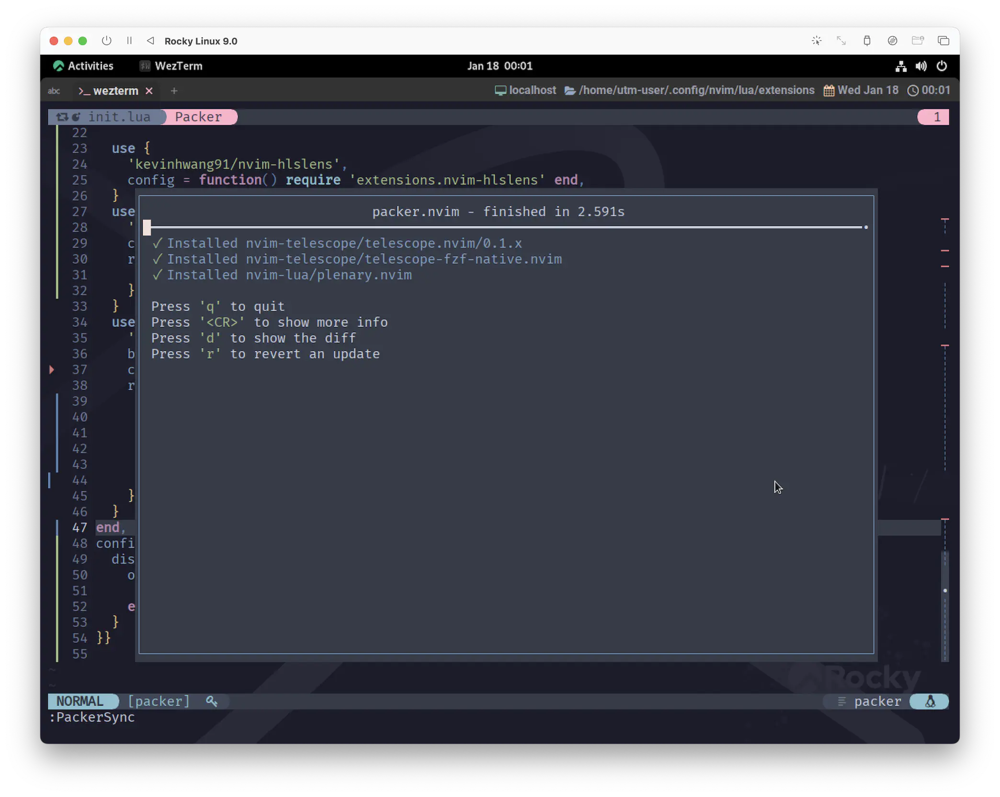
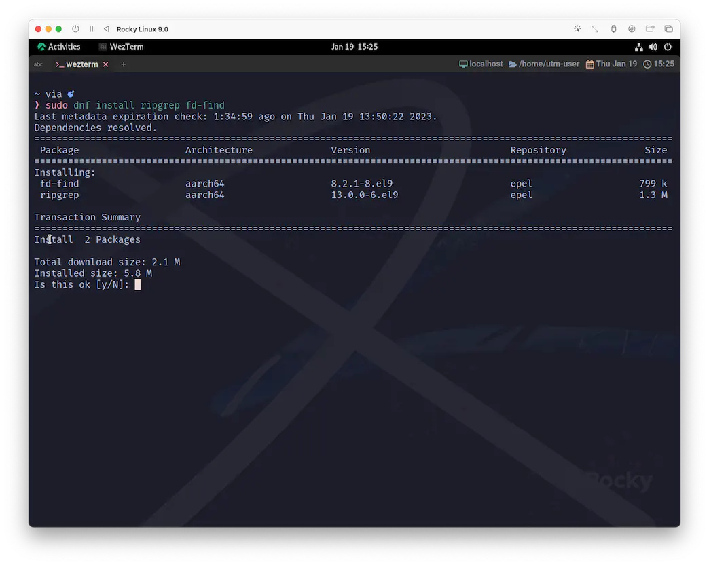
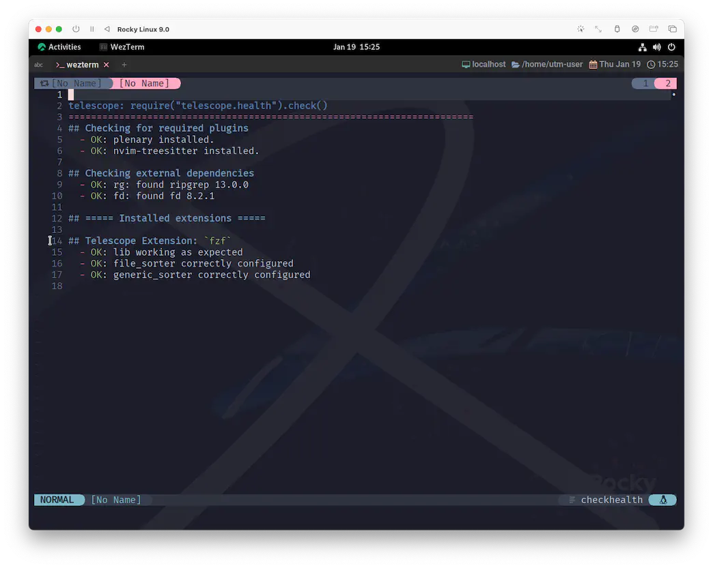
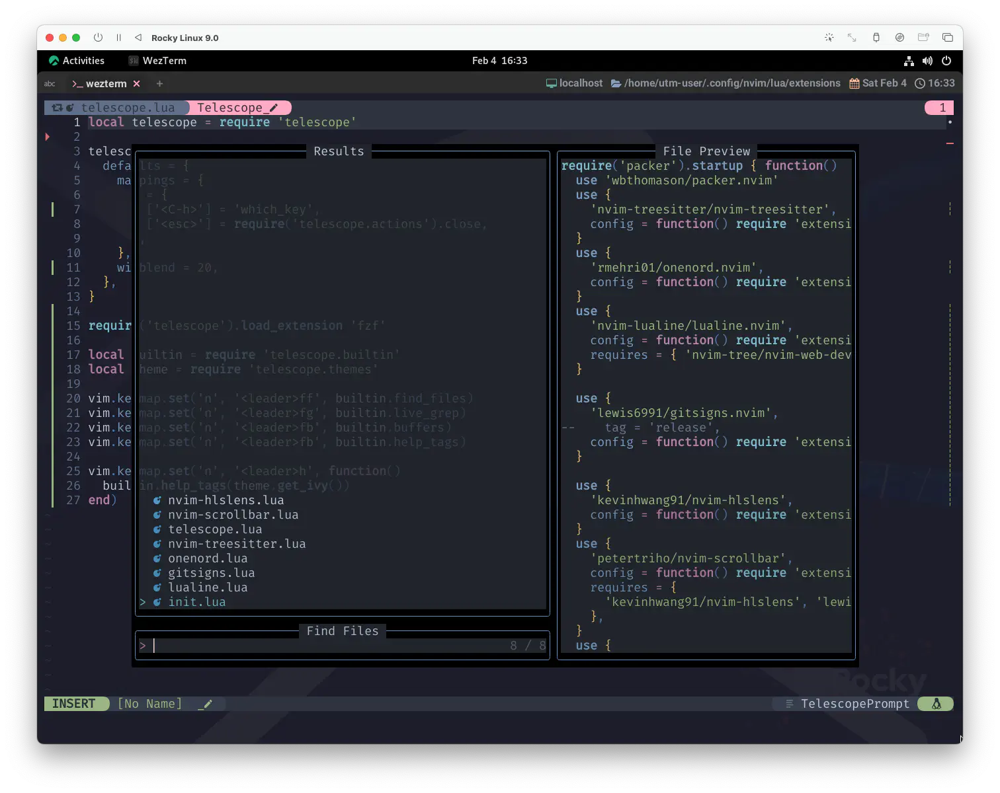

telescope.nvim
前回でほぼ外観が出来上がったので、ここからは一気に機能を追加していきます😆
Gaze deeply into unknown regions using the power of the moon.
月の力を借りて、未知の領域を深く覗き込む。
とってもロマンチックな見出し🥰
telescope.nvim is a highly extendable fuzzy finder over lists. Built on the latest awesome features from neovim core. Telescope is centered around modularity, allowing for easy customization.
telescope.nvim は、リスト上のファジーファインダーで、高度に拡張可能です。 neovim core の最新の素晴らしい機能に基づいて構築されています。 Telescope はモジュール性を重視しており、簡単にカスタマイズすることができます。
Community driven builtin pickers, sorters and previewers.
コミュニティによって開発された、ピッカー、ソーター、プレビュー機能を搭載しています。
2023年はうさぎ年です🐰 うさぎといえば月ですね🌝
今やらないでいつやるの❓telescope.nvimの登場です 🔭
Getting Started
しばらくは文字ばっかり続いちゃいますが、頑張っていきましょう😆
Neovim (v0.7.0) or the latest neovim nightly commit is required for telescope.nvim to work.
最初のこれはもう問題ないですね。他も覗いてみましょう。
Required dependencies
nvim-lua/plenary.nvim is required.
packerのrequiredに指定してあげれば良いので、ここもまだ見知った領域ですね❗
Suggested dependencies
月の力を借りているとは言え、高度な拡張を謳っていることもあって、ここから先の手順は少し複雑に感じられるかもしれません。
...とは言え、必要なのは有名なソフトウェアばかりなので、どんな環境に対しても簡単なインストール方法が確立されています❗
まあだいじょぶ。できるよ🤗
BurntSushi/ripgrep is required for live_grep and grep_string
and is the first priority for find_files.
BurntSushi/ripgrepはlive_grepとgrep_stringに必要で、find_filesでは最優先されます。
わたしも半分くらいは何言われてるのかわからないんで思考回路はショート寸前😵💫ですが、
ripgrepが必要だということは伝わってきました❗
We also suggest you install one native telescope sorter to significantly improve sorting performance. Take a look at either telescope-fzf-native.nvim or telescope-fzy-native.nvim. For more information and a performance benchmark take a look at the Extensions wiki.
また、ソート性能を大幅に向上させるために、1つのネイティブな telescope sorter をインストールすることをお勧めします。 telescope-fzf-native.nvim か telescope-fzy-native.nvim のいずれかを見てみてください。 より詳細な情報とパフォーマンスベンチマークについては、 Extensions wiki.をご覧ください。
sorterは必須ではありませんが、せっかくお勧めされているし、何よりもなんか面白そうです☺️
"性能を大幅に向上"❓今すぐ 会いたいよ😆
ripgrep
まずはripgrepから。
ripgrep is a line-oriented search tool that recursively searches the current directory for a regex pattern. ripgrep は行指向の検索ツールで、正規表現パターンに基づいてカレントディレクトリを再帰的に検索します。
Rustで開発されているgrep
1
ツールです。
Archives of precompiled binaries for ripgrep are available for Windows, macOS and Linux.
ripgrep のコンパイル済みバイナリのアーカイブは、Windows、macOS、Linux 用に用意されています。
インストールに関しては手厚くフォローされているので、ほとんどの環境で楽勝でしょう❗
telescope-fzf-native.nvim
わたし自身があんまりよく分かってない領域なので、少し無責任な紹介になってしまいますが、
ここではtelescope-fzf-native.nvimを選んで話を進めます。
fzf-native is a c port of fzf. It only covers the algorithm and implements few functions to support calculating the score. This means that the fzf syntax is supported:
fzf-native は fzf の c 版です。これはアルゴリズムのみをカバーし、スコア計算をサポートするいくつかの関数を実装しています。 これは、fzf構文がサポートされていることを意味します。
これもまたrequireのミルフィーユになっていて、泣きたくなるような moonlight🌕
To get fzf-native working, you need to build it with either cmake or make. As of now, we do not ship binaries. Both install methods will be supported going forward.
fzf-nativeを動作させるためには、cmake または make でビルドする必要があります。 現在のところ、バイナリは同梱していません。今後、どちらのインストール方法もサポートする予定です。
まあでも、ここまで来れたのだからなんとかなるでしょ😉 へーきへーき。
これにプラスして、GCCかClangが必要なので、足りないものがあれば事前にインストールしておきましょう。
わたしが普段このサイトのスクリーンショットに使っているLinuxの環境では、
nvim-treesitterのインストール時にClangを導入してあったので、特に何もせずそのままいけました。
macOSも特に何も考えずにいつもいけてます。
Windowsはいつも通り自信がありませんが、
もしかしたらCMakeとMicrosoft C++ Build Tools on Windowsを使う方が、MinGWを必要としない分、簡単かもしれません。
Optional dependencies
あともうちょっと...。がんばれ...❗
- sharkdp/fd (finder)
- nvim-treesitter/nvim-treesitter (finder/preview)
- neovim LSP (picker)
- devicons (icons)
nvim-treesitterとdeviconsについては導入済みですね、だいぶ安心できました。
neovim LSPについては、このサイトで扱うのはもう少し先の予定なので、ここは一旦スキップしましょ❓
ってことは...❓あとひとつ❗
fd
fd is a program to find entries in your filesystem. It is a simple, fast and user-friendly alternative to find. While it does not aim to support all of find's powerful functionality, it provides sensible (opinionated) defaults for a majority of use cases.
fd は、ファイルシステム内のエントリを検索するプログラムです。 find に代わる、シンプルで高速かつユーザフレンドリなプログラムです。 find の強力な機能のすべてをサポートすることを目的としているわけではありませんが、 ほとんどのユースケースに対して、賢明な(意見のある)デフォルトを提供しています。
On ***
これもrigprepと同じく、手厚くインストール方法が提供されているので大丈夫❗
Installation & Configration
長い道のりでしたが、ようやくコンフィグを書くところまで来ました😆
local telescope = require 'telescope'
telescope.setup {
defaults = {
mappings = {
i = {
['<C-h>'] = 'which_key',
},
},
winblend = 20,
},
}
telescope.load_extension 'fzf'
local builtin = require 'telescope.builtin'
vim.keymap.set('n', '<leader>ff', builtin.find_files)
vim.keymap.set('n', '<leader>fg', builtin.live_grep)
vim.keymap.set('n', '<leader>fb', builtin.buffers)
vim.keymap.set('n', '<leader>fh', builtin.help_tags)
上の例は、オフィシャルに示されているコードを所々省略した記述にしています。
ここまで来れば、あとはもうpackerに任せればできちゃいます😸
use {
'nvim-telescope/telescope.nvim',
branch = '0.1.x',-- or... tag = '0.1.1'
config = function() require 'extensions.telescope' end,
requires = {
'nvim-tree/nvim-web-devicons', 'nvim-lua/plenary.nvim',
{ 'nvim-telescope/telescope-fzf-native.nvim', run = 'make' },
},
}
CMakeを使用する場合、telescope-fzf-native.nvimのコードを以下のようにしてください。
{
'nvim-telescope/telescope-fzf-native.nvim',
run = 'cmake -S. -Bbuild -DCMAKE_BUILD_TYPE=Release &&\
cmake --build build --config Release &&\
cmake --install build --prefix build'
}
信じてないのね...😿
だったらね、こう叫んでみて❗ムーンプリズム・パワー、メイクアーップ🐱🌙
はっ❗🐰🙋
telescope.nvim、telescope-fzf-native.nvim、plenary.nvimの3つがインストールされていれば成功です❗
なんと❗telescope.nvimは、つい最近0.1.1がリリースされました👏 とってもタイムリー❗
ただ、今後このtag、branchがどういう扱いになるのか分からない (わたしが知らないだけ❓) ので、
今後の動向を気にかけておく必要はあるかも。
CheckHealth
Make sure you call :checkhealth telescope after installing
telescope to ensure everything is set up correctly.
Telescope をインストールした後、必ず:checkhealth telescopeを呼び出して、
すべてが正しくセットアップされていることを確認してください。
After this setup you can continue reading here or switch to
:help telescope to get an understanding of how to use Telescope and how to configure it.
このセットアップの後、ここを読み続けるか、:help telescope に切り替えて
Telescope の使用方法と設定方法を理解することができます。
telescope.nvimさえインストールできれば、checkhealth が使えます。
まさかサボってたせいでエラーが出てるぅ❗な〜んてこと、あるはずはありませんが、一度確認のために動かしてみましょう😉
:che telescope
...。😮  
ほら❗オールグリーン✨
fzfを知っている人に向けて書くと、少なくともここに出てくるfzfはtelescope-fzf-native.nvimの事なので、
本家の fzf はあってもなくても平気みたいです😉
実際、上の環境ではインストールされていません。
telescope.builtin
それでは、コンフィグに入れたleaderffを試してみましょう...。 
いい感じ〜☺️
ファイル名で検索して絞り込んだり、 ↑↓でカーソルを動かしたり、returnでファイルを開いたりできます😌
Wrap Up
やっぱりというか、当然というか...。これもインストールだけなのにすごいボリュームでしたね😅
しかし、月の力を借りて、未知の領域を深く覗き込むことが出来るようになりました❗
コンフィグについてはまだもう少し書いておきたい事があるのですが、ここで一旦休憩しましょ🌕🐇